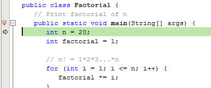
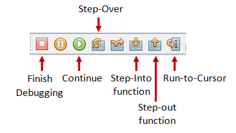
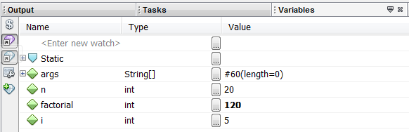

NetBeans (@ http://netbeans.org) is an open-source Integrated Development Environment (IDE). NetBeans began in 1996 as a Java IDE student project at Charles University in Prague. Sun Microsystems acquired NetBeans in 1999. In 2010, Oracle acquired Sun (and thus NetBeans).
Compared with its rival Eclipse (http://www.elicpse.org) (both are open-source, so I don't know what are they competing for?), NetBeans provides seamless support for Java AWT/Swing, Java ME mobility pack, Java EE, and bundled with an excellent profiler for performance tuning.
How to Install NetBeans 8.1
For Windows
Step 0: Install JDK
To use NetBeans for Java programming, you need to first install Java Development Kit (JDK). See "JDK - How to Install".
Step 1: Download
Download "NetBeans IDE" installer from http://netbeans.org/downloads/index.html. There are many "bundles" available. For beginners, choose the "Java SE" (e.g., "netbeans-8.1-javase-windows.exe").
Step 2: Run the Installer
Run the downloaded installer.
For Mac
Read "How to Install NetBeans on Mac".
For Ubuntu Linux
Read "How to Install NetBeans on Ubuntu".
Writing a Hello-world Java Program in NetBeans
Step 0: Launch NetBeans
Launch NetBeans. If the "Start Page" appears, close it by clicking the "close" button.
Step 1: Create a New Project
For each Java application, you need to create a "project" to keep all the source files, classes and relevant resources.
- From "File" menu ⇒ Choose "New Project...".
- In "Choose Project" diglog ⇒ Under "Categories", choose "Java" ⇒ Under "Projects", choose "Java Application" ⇒ "Next".
- In "Name and Location" ⇒ Under "Project Name", enter "
FirstProject" ⇒ In "Project Location", select a suitable directory to save your works ⇒ Uncheck "Create Main class" ⇒ Finish.
Step 2: Write a Hello-world Java Program
- Right-click on "
FirstProject" ⇒ "New" ⇒ "Java Class..." (OR from the "File" menu ⇒ "New File..." ⇒ Categories: "Java", File Types: "Java Class" ⇒ "Next"). - In "Name and Location" ⇒ Under "Class Name", enter "
Hello" ⇒ Delete the content in "Package" if it is not empty ⇒ "Finish". - The source file "
Hello.java" appears in the editor panel. Enter the following codes:/** First Java Program to say Hello wrold */ public class Hello { public static void main(String[] args) { System.out.println("Hello, world"); } }
Step 3: Compile & Execute
There is no need to "compile" the source code explicitly, as NetBeans performs the so-called incremental compilation (i.e., the source statement is compiled while it is entered).
To run the program, right-click anywhere in the source (or from the "Run" menu), select "Run File" (or "Run Hello.java"). Observe the output on the output console.
Notes:
- You should create a new Java project for each of your Java application.
- Nonetheless, NetBeans allows you to keep more than one programs in a project, which is handy for writing toy programs (such as your tutorial exercises). If you have more than one files with
main()method in one project, you need to right-click the source and choose "Run File".
Step 4: Read the NetBeans Documentation
- At a minimum, you SHOULD READ the "IDE Basics, Getting Started, Java Application", which is accessible via NetBeans's "HELP" menu ⇒ "Help Contents".
- The "Help" ⇒ "Online Doc and Support" (@ http://netbeans.org/kb/index.html) contains many articles and tutorial on using NetBeans.
- The NetBeans "Start Page" also provides many useful links to get you started.
Debugging Program in NetBeans
Step 0: Write a Java Program
The following program computes and prints the factorial of n (=1*2*3*...*n). The program, however, has a logical error and produce a wrong answer for n=20 ("The Factorial of 20 is -2102132736" - a negative number?!).
1 2 3 4 5 6 7 8 9 10 11 12 13 14 |
/** Compute the factorial of n */ public class Factorial { // Print factorial of n public static void main(String[] args) { int n = 20; int factorial = 1; // n! = 1*2*3...*n for (int i = 1; i <= n; i++) { factorial *= i; } System.out.println("The Factorial of " + n + " is " + factorial); } } |
Let us use the graphic debugger to debug the program.
Step 1: Set an initial Breakpoint
A breakpoint suspends program execution for you to examine the internal states of the program. Before starting the debugger, you need to set at least one breakpoint to suspend the execution inside the program. Set a breakpoint at main() method by clicking on the left-margin of the line containing main(). A red circle or an inverted Triangle appears in the left-margin indicating a breakpoint is set at that line.
Step 2: Start Debugging
Right click anywhere on the source code ⇒ "Debug File". The program begins execution but suspends its operation at the breakpoint, i.e., the main() method.
As illustrated in the following diagram, the highlighted line (also pointed to by a green arrow) indicates the statement to be executed in the next step.
Step 3: Step-Over and Watch the Variables and Outputs
Click the "Step Over" button (or select "Step Over" in "Debug" menu) to single-step thru your program. At each of the step, examine the value of the variables (in the "Variable" panel) and the outputs produced by your program (in the "Output" Panel), if any. You can also place your cursor at any variable to inspect the content of the variable.
 Single-stepping thru the program and watching the values of internal variables and the outputs produced is the ultimate mean in debugging programs - because it is exactly how the computer runs your program!
Step 4: Breakpoint, Run-To-Cursor, Continue and Finish
As mentioned, a breakpoint suspends program execution and let you examine the internal states of the program. To set a breakpoint on a particular statement, click on the left-margin of that line (or select "Toggle Breakpoint" from "Run" menu).
"Continue" resumes the program execution, up to the next breakpoint, or till the end of the program.
"Single-step" thru a loop with a large count is time-consuming. You could set a breakpoint at the statement immediately outside the loop (e.g., Line 11 of the above program), and issue "Continue" to complete the loop.
Alternatively, you can place the cursor on a particular statement, and issue "Run-To-Cursor" to resume execution up to the line.
"Finish" ends the debugging session. Always terminate your current debugging session using "Finish" or "Continue" till the end of the program.
Other Debugger's Features:
Modify the Value of a Variable
You can modify the value of a variable by entering a new value in the "Variable" panel. This is handy for temporarily modifying the behaviour of a program, without changing the source code.
Step-Into and Step-Out
To debug a method, you need to use "Step-Into" to step into the first statement of the method. You could use "Step-Out" to return back to the caller, anywhere within the method. Alternatively, you could set a breakpoint inside a method.
NetBeans - Tips & Tricks
General Usage
These are the features that I find to be most useful in NetBeans:
- Maximizing Window (double-click): You can double-click on the "header" of any panel to maximize that particular panel, and double-click again to restore it back. This is particularly useful for editing source code in full panel.
- Code Auto-Complete (or Intelli-Sense) (ctrl-space): Enter a partial statement (e.g., Sys) and press control-space to activate the auto-complete, which displays all the available choices.
- Javadoc (ctrl-space, alt-F1): Place the cursor on a method or class, and press ctrl-space to view the javadoc; or right-click ⇒ Show Javadoc (alt-F1) to open it on a browser.
- Code Shorthand (tab): For example, you can enter "
sout" and press TAB for "System.out.println"; "psvm" for "public static void main(String[] args) { }" or "fori" + tab for a for-loop. To view and configure code template, choose "Tools" menu ⇒ "Options" ⇒ "Editor" ⇒ "Code Templates". - Formatting Source Code (alt-shift-f): Right-click on the source (or from the "Source" menu) ⇒ Choose "Format". NetBeans will layout your source codes with the proper indents and format. To configure the formatting, choose "Tools" menu ⇒ "Options" ⇒ "Editor" ⇒ "Formatting".
You can also select the section of codes to be formatted, instead of the entire file. - Hints for Correcting Syntax Error: If there is a syntax error on a statement, a red mark will show up on the left-margin on that statement. You could click on the "light bulb" to display the error message, and also select from the available hints for correcting that syntax error.
- Rename (Refactor) (ctrl-r): To rename a variable, place the cursor on that variable, right-click ⇒ "Refactor" ⇒ "Rename" ⇒ Enter the new name. All the appearances of that variables in the project will be renamed.
- Small Programs: You can keep many small toy programs (with
main()) in one Java project instead of create a new project for each small program. To run the desired program, on the "editor" panel ⇒ right-click ⇒ "Run File". - Source Toggle Comment: To temporarily comment-off a block of codes, choose "Source" ⇒ "Toggle Comment".
- Error Message Hyperlink: Click on an error message will hyperlink to the corresponding source statement.
- Command-Line Arguments: To provide command-line arguments to your Java program in NetBeans, right-click on the "project" ⇒ "Set as Main Project" ⇒ "Set Configurations" ⇒ "Customize..." ⇒ "Run" ⇒ select the "Main" class ⇒ type your command-line arguments inside the "Arguments" field ⇒ choose "Run" menu ⇒ "Run Main Project".
- Line Numbers: To show the line numbers, right-click on the left-margin ⇒ "Show Line Numbers".
- Changing Font Face and Size: Tools ⇒ Options ⇒ Fonts & Colors ⇒ In "Category", select "Default" ⇒ In "Font", choose the font face and size.
- Resetting Window View: If you mess up the window view (e.g., you accidentally close a window and cannot find it anymore), you can reset the view via "Window" menu ⇒ "Reset Windows".
- Code Templates: For example, when you create a new Java class, NetBeans retrieves the initial contents from the "Java Class" code template. To configure code templates, select "Tools" menu ⇒ "Templates" ⇒ Choose the desired template ⇒ "Open in Editor". To set a value of a variable used in the all the code templates (e.g.,
$User), select "Tools" menu ⇒ "Templates" ⇒ "Settings". - Displaying Chinese Character: Need to choose a font that support chinese character display, such as "Monospace", in Tools ⇒ Options ⇒ Fonts & Colors ⇒ Syntax ⇒ default.
- Changing the JDK Location: The Netbeans configuration file is located at "
etc\netbeans.conf". Edit the directive "netbeans_jdkhome". - Let me know if you have more tips to be included here.
Java Application Development
- Choosing the JDK version for your program: Right-click on your project ⇒ "Properties" ⇒ "Source" node ⇒ You can select the JDK level of your project in pull-donw menu "Source/Binary Format".
- Enabling JDK 7 support: If JDK 7 is already installed in your system, right-click on your Project ⇒ "Properties" ⇒ "Source" node ⇒ "Source/Binary Format" ⇒ Select "JDK 7". Also check "Libraries" ⇒ Java Platform ⇒ JDK 7.
If JDK 7 is not installed/configured, install JDK 7. Add JDK 7 support to NetBeans via "Tool" menu ⇒ "Java Platforms" ⇒ "Add Platform...". - Choosing Default Charset: Right-click on your project ⇒ "Properties" ⇒ "Source" node ⇒ "Encoding" ⇒ choose your desired charset for the text-file I/O from the pull-down menu.
- Enabling Unicode Support for File Encoding: Right-click on your project ⇒ "Properties" ⇒ "Source" node ⇒ "Encoding" ⇒ choose your Unicode encoding (e.g., UTF-8, UTF-16, UTF-16LE, UTF-16GE) for the text-file I/O.
- To include Javadoc/Source: Use "Library Manager" (select the "Tools" menu ⇒ "Libraries"); or "Java Platform Manager" (select "Tools" menu ⇒ "Java Platforms")
- Adding External JAR files & Native Libraries (".dll", ".lib", ".a", ".so"): Many external Java packages (such as JOGL, Java3D, JAMA, etc) are available to extend the functions of JDK. These packages typically provide a "
lib" directory containing JAR files (".jar") (Java Archive - a single-file package of Java classes) and native libraries (".dll", ".lib" for windows, ".a", ".so" for Linux and Mac).
To include an external JAR file (".jar") into a project: Expand the project node ⇒ Right-click on "Libraries" ⇒ "Add JAR/Folder..." ⇒ Select the desired JAR file or the folder containing the classes.
If the external package contains many JAR files, you could create a user library to contain all the JAR files, and add the library to all the projects that required these JAR files. From "Tools" menu ⇒ "Libraries" ⇒ "New Library..." ⇒ Enter a library name ⇒ Use "Add JAR/Folder..." to add JAR files into this library.
Many JAR files come with native libraries in the form of ".dll", ".lib" (for Windows) and ".a", ".so" for Linux/Mac. The directory path of these libraries must be included in JRE's property "java.library.path". This can be done via right-click the project ⇒ Set Configuration ⇒ Customize... ⇒ Run ⇒ In "VM options", enter "-Djava.library.path=xxx", wherexxxis path of the native libraries.
Notes: The JAR files must be included in theCLASSPATH. The native library directories must be included in JRE's property "java.library.path", which normally but not necessarily includes all the paths from thePATHenvironment variable. Read "External JAR files and Native Libraries".
Writing Java GUI (AWT/Swing) Application in NetBeans
Step 0: Read
- Java GUI Application Learning Trail @ http://www.netbeans.org/kb/trails/matisse.html.
- Swing Tutorial's "Learning Swing with the NetBeans IDE" @ http://docs.oracle.com/javase/tutorial/uiswing/learn/index.html.
Step 1: Create a New "Java Application" Project
- Launch NetBeans ⇒ File ⇒ New Project...
- Under "Categories", choose "Java" ⇒ Under "Projects", choose "Java Application" ⇒ Next.
- In "Project Name", enter "
FirstNetBeansGUI" ⇒ Choose a suitable directory for your "Project Location" ⇒ Uncheck the "Create Main class" box ⇒ Finish.
Step 2: Write a Java File "JFrame Form"
- Right-click on the project "
FirstNetBeansGUI" ⇒ "New" ⇒ "JFrame Form..." (or "Others" ⇒ "Swing GUI Forms" ⇒ "JFrame Form"). - In "Class Name", enter "
NetBeansSwingCounter" ⇒ Finish. - Create the GUI Components visually:
- From the "Platte" panel ⇒ "Swing Controls" ⇒ Drag and drop a "
Label", "TextField", and "Button" into the design panel. - Click on the "
jLabel1" ⇒ In the "Properties" panel, enter "Count" in "text" (You can also single-click on thejLabel1to change the text). Right-click on thejLable1⇒ Change Variable Name ⇒ In "New Name", enter "lblCount". - Similarly, for "
jTextField1" ⇒ Change the "text" to 0, and change the "Variable Name" to "tfCount" ⇒ Resize the text field if necessary. - For "
jButton1" ⇒ Change the "text" to "Count", and change the "Variable Name" to "btnCount".
- From the "Platte" panel ⇒ "Swing Controls" ⇒ Drag and drop a "
- Write the event handler for the button by double-clicking the button and enter the following codes:
private void btnCountActionPerformed(java.awt.event.ActionEvent evt) { count++; tfCount.setText(count + ""); } - Create an instance variable
count(just below the class declaration) as follows:public class Counter extends javax.swing.JFrame { int count = 0;
Step 3: Compile & Execute
Right-click the source and select "Run File".
Step 4: Study the Generated Source Code
Expand the "Generated Code" and study how the GUI builder declare, allocate and initialize the GUI Components in the initComponents(). Note how the JButton registers an ActionEvent listener and how an inner class is used as the listener and provide the event handler actionPerformed(). Also notice that the main() method uses a Swing's worker to run the GUI on the Event-Dispatcher thread, instead of the main thread, for thread-safe operations.
public class NetBeansSwingCounter extends javax.swing.JFrame {
int count = 0;
// Constructor to setup the UI via initComponents()
public NetBeansSwingCounter() {
initComponents();
}
private void initComponents() {
lblCount = new javax.swing.JLabel();
tfCount = new javax.swing.JTextField();
btnCount = new javax.swing.JButton();
setDefaultCloseOperation(javax.swing.WindowConstants.EXIT_ON_CLOSE);
lblCount.setText("Counter");
tfCount.setText("0");
btnCount.setText("Count");
// Create an anonymous inner as the listener for the ActionEvent fired by btnCount
btnCount.addActionListener(new java.awt.event.ActionListener() {
public void actionPerformed(java.awt.event.ActionEvent evt) {
btnCountActionPerformed(evt);
}
});
// Laying out the components
// ......
pack();
}
// ActionEvent handler for btnCount
private void btnCountActionPerformed(java.awt.event.ActionEvent evt) {
count++;
tfCount.setText(count + "");
}
public static void main(String args[]) {
// Setup the Look and Feel
// .....
// Run the constructor on the Event-Dispatcher Thread for thread-safe
java.awt.EventQueue.invokeLater(new Runnable() {
public void run() {
new NetBeansSwingCounter().setVisible(true);
}
});
}
// private variables
private javax.swing.JButton btnCount;
private javax.swing.JLabel lblCount;
private javax.swing.JTextField tfCount;
}
NetBeans and MySQL
Reference: "Connecting to a MySQL Database" @ http://netbeans.org/kb/docs/ide/mysql.html.
NetBeans (JavaEE) provides direct support to MySQL server. You can use NetBeans as a GUI client to access a MySQL server, as well as an administrative tool (e.g., starting and stopping the server).
Configuring NetBeans to Support MySQL
From NetBeans "Window" menu ⇒ Select "Services". The "Services" tab shall appear on the left pane
- Right-click on the "Databases" node ⇒ "Register MySQL Server". (If you have already registered a MySQL server, you can right-click on Server node "
MySQL Server at hostname:port" ⇒ Properties, to modify its properties.) - Select the "Basic Properties" tab, enter the hostname, port number, root user and password.
- Select the "Admin Properties" tab:
- Leave the "Path/URL to admin tool" empty.
- In "Path to start command", enter "
<MYSQL_HOME>\bin\mysqld.exe"; in the "Arguments", enter "--console" - In "Path to stop command", enter "
<MYSQL_HOME>\bin\mysqladmin.exe", in the "Arguments", enter "-u root -ppassword shutdown".
- A server node "
MySQL Server at hostname:port" appears.
Database Administration - Start/Stop the Server and Create Databases
- You can start the MySQL server by right-clicking on the server node ⇒ select "start". [There seems to be a problem here. If a "connection refused: connect" error occurs, enter the password again.]
- Once the MySQL server is started and connected, you can see the list of databases by expanding the MySQL server node. You can create a new database by right-clicking on it and choose "Create Database...".
Create a new Connection
You need a connection to manipulate data. You can create multiple connections with different users and default databases.
- Right-click on the "Databases" ⇒ "New Connection..." ⇒ Select the driver "MySQL Connector/J" ⇒ Next ⇒ Enter hostname, port number, default database, a general username and password ⇒ "Test Connection" (make sure that MySQL is started) ⇒ Finish.
- A connection node "
jdbc:mysql://hostname:port/defaultDatabase" appears.
Manipulating Data via a Connection
- Right-click on a connection node (e.g., "
jdbc:mysql://hostname:port/defaultDatabase") ⇒ Choose "Connect" (if not connected, provided that the MySQL server has been started). - You can expand the connection node to view all the databases.
- Expand an existing database. There are three sub-nodes "Tables", "View" and "Procedures". Right-click on the "Tables" to create table or execute command. Similarly, right-click on the "View" and "Procedures".
- To view/manipulate the records in a table, right-click on the selected table ⇒ You can choose to "View Data...", "Execute Command...", etc.
- You can right-click on the connection to "connect" or "disconnect" from the server.
Create a SQL Script and Run the Script
You can create a SQL script by right-clicking on a project ⇒ New ⇒ "SQL File". You can run the script by right-clicking on the SQL script ⇒ "Run File" ⇒ Select an existing connection (or create a new connection) to run the script. You could also run a single statement (right-click on the statement ⇒ Run Statement) or a selected group of statements (highlight the statements ⇒ Right-click ⇒ Run Selection).
Developing and Deploying Web Application in NetBeans
Read:
- "Introduction to Developing Web Applications" @ http://netbeans.org/kb/docs/web/quickstart-webapps.html.
- More articles in "Java EE & Java Web Learning Trail" @ http://netbeans.org/kb/trails/java-ee.html.
Web (HTTP) Servers
Configuring Web Server
You could configure the web server via "Tools" menu ⇒ "Servers".
Tomcat Server
To configure Tomcat Server, select "Tools" menu ⇒ "Servers" ⇒ click "Add Servers":
- Choose Server: Select the desired Tomcat version ⇒ Next.
- Installation and Login Details: In "Server Location", fill in the Tomcat installation directory ($CATALINA_HOME) ⇒ Enter the username/password of a tomcat user with "manager" role. You could either check the "create user if it does not exist" or define the tomcat user in "
$CATALINA_HOME\conf\tomcat-users.xml" as follows:<tomcat-users> <role rolename="manager"/> <user username="tomcatmanager" password="xxxx" roles="manager,manager-script,admin" /> </tomcat-users>
Running the Web Server
Choose "Services" ⇒ Expand "Servers" node ⇒ Right-click on the desired server ⇒ Start/Stop/Restart.
MySQL Database Server
You can also manage the MySQL database server directly from Tomcat. Read "NetBeans and MySQL" Section.
Writing a Hello-World Servlet/JSP Web Application
Create a New Servlet/JSP Project
- From "File" menu ⇒ choose "New Project...".
- "Choose Project" ⇒ Under "Categories", choose "Java Web" ⇒ Under "Projects", choose "Web Application" ⇒ "Next".
- "Name and Location" ⇒ In "Project Name", enter "
HelloServletJSP" ⇒ In "Project Location", select a suitable directory to save your works ⇒ Check "Set as Main Project" ⇒ Next. - "Server and settings" ⇒ Choose your server, or "add" a new server ⇒ Next.
- "Frameworks" ⇒ Select none for pure servlet/JSP application ⇒ Finish.
Writing a Hello-World JSP
A JSP page called "index.jsp" is automatically created, which says "Hello world!". To execute this JSP, right-click on the project ⇒ "Run". The URL is http://localhost:8080/HelloServletJSP/index.jsp.
Writing a Hello-World Servlet
- Right-click on the project "
HelloServletJSP" ⇒ New ⇒ Servlet. - "Name and Location" ⇒ In "Class Name", enter "
HelloServlet" ⇒ In "Package", enter "hello" ⇒ Next. - "Configure Servlet Deployment" ⇒ In "Servlet Name", enter "
HelloServletExample" ⇒ In "URL Pattern", enter "sayhello" ⇒ Finish. - Enter the following codes for "
HelloServlet.java":package hello; import java.io.IOException; import java.io.PrintWriter; import javax.servlet.ServletException; import javax.servlet.http.HttpServlet; import javax.servlet.http.HttpServletRequest; import javax.servlet.http.HttpServletResponse; public class HelloServlet extends HttpServlet { @Override public void doGet(HttpServletRequest request, HttpServletResponse response) throws IOException, ServletException { // Set the response message's MIME type (in Content-Type response header) response.setContentType("text/html;charset=UTF-8"); // Get an output Writer to write the response message over the network PrintWriter out = response.getWriter(); // Write the response message (in an HTML page) to display "Hello, world!" try { out.println("<!DOCTYPE html>"); out.println("<html>"); out.println("<head><title>Hello Servlet</title></head>"); out.println("<body><h1>Hello, World (from Java Servlet)!</h1></body>"); out.println("</html>"); } finally { out.close(); // Always close the output writer } } } - To execute the servlet: Right-click on the project ⇒ run ⇒ Change the URL to
http://localhost:8080/HelloServletJSP/sayhello.
Generating a WAR-file for a Web Application
A WAR (Web Archive) file is basically a zip file for distributing web application in single file. You can use WinZip or WinRAR to inspect or unzip the war file.
To distribute the project as a war-file, right-click project ⇒ "Clean and Build". The war file is created in the "dist" directory. You can deploy the web application by dropping the war-file into Tomcat's "webapps" directory. Tomcat will automatically unzip the war-file and deploy the application upon startup.
Debugging Web Application
The most important reason for using IDE is to use the graphic debugger for debugging the program. You can set a breakpoint in your server-side Java codes, and "Debug" a web application, similar to a standalone application.
Writing a Hello-world JSF 2.0 Web Application
Create a New JSF 2.0 Project
- From "File" menu ⇒ choose "New Project...".
- "Choose Project" ⇒ Under "Categories", choose "Java Web" ⇒ Under "Projects", choose "Web Application" ⇒ "Next".
- "Name and Location" ⇒ In "Project Name", enter "
HelloJSF20" ⇒ In "Project Location", select a suitable directory to save your works ⇒ Check "Set as Main Project" ⇒ Next. - "Server and settings" ⇒ Choose your server, or "add" a new server ⇒ Next.
- "Frameworks" ⇒ Check "JavaServer Faces" ⇒ In "Libraries", "Registered Libraries", select "JSF 2.0" ⇒ Finish.
- An "
index.xhtml" JSF page is generated, as follows:<?xml version='1.0' encoding='UTF-8' ?> <!DOCTYPE html> <html xmlns="http://www.w3.org/1999/xhtml" xmlns:h="http://java.sun.com/jsf/html"> <h:head> <title>Facelet Title</title> </h:head> <h:body> Hello from Facelets </h:body> </html>To run this facelet, right-click on the project ⇒ Run.
Create a new JSF 2.0 Facelet
- Right-click on the project ⇒ New ⇒ "Other..."
- "Choose File Type" ⇒ Under "Category", select "JavaServer Faces" ⇒ Under "File Type", select "JSF Page" ⇒ Next.
- "Name and Location" ⇒ In "File Name", enter "
HelloJSF20" ⇒ In "Options", check "Facelets" ⇒ Finish. - In "
HelloJSF20.xhtml", enter the following codes:<?xml version='1.0' encoding='UTF-8' ?> <!DOCTYPE html> <html xmlns="http://www.w3.org/1999/xhtml" xmlns:h="http://java.sun.com/jsf/html"> <h:head> <title>Hello JSF 2.0</title> </h:head> <h:body> <h1>Hello from Facelets</h1> </h:body> </html> - To execute the JSF page, right-click on the project ⇒ Run ⇒ Change the URL to
http://localhost:8080/HelloJSF20/HelloJSF20.xhtml.
Writing a Hello-world JSF 1.2 Web Application
Create a New JSF 1.2 Project
- From "File" menu ⇒ choose "New Project...".
- "Choose Project" ⇒ In "Categories", choose "Java Web" ⇒ In "Projects", choose "Web Application" ⇒ "Next".
- "Name and Location" ⇒ In "Project Name", enter "
HelloJSF12" ⇒ In "Project Location", select a suitable directory to save your works ⇒ Check "Set as Main Project" ⇒ Next. - "Server and settings" ⇒ choose your server, or "add" a new server ⇒ Next.
- "Frameworks" ⇒ Check "JavaServer Faces" ⇒ In "Libraries", "Registered Libraries", select "JSF 1.2" ⇒ Finish.
- A "
WelcomeJSF.jsp" page is generated, as follows:<%@page contentType="text/html" pageEncoding="UTF-8"%> <%@taglib prefix="f" uri="http://java.sun.com/jsf/core"%> <%@taglib prefix="h" uri="http://java.sun.com/jsf/html"%> <!DOCTYPE html> <%-- This file is an entry point for JavaServer Faces application. --%> <f:view> <html> <head> <meta http-equiv="Content-Type" content="text/html; charset=UTF-8"/> <title>JSP Page</title> </head> <body> <h1><h:outputText value="JavaServer Faces"/></h1> </body> </html> </f:view>To run this page, right-click on the project ⇒ Run.
Create a new JSF 1.2 Page
- Right-click on the project ⇒ New ⇒ "Other..."
- "Choose File Type" ⇒ In "Category", select "JavaServer Faces" ⇒ In "File Type", select "JSF Page" ⇒ Next.
- "Name and Location" ⇒ In "File Name", enter "
HelloJSF12" ⇒ In "Options", check "JSP File (Standard Syntax)" ⇒ Finish. - In "
HelloJSF12.jsp", enter the following codes:<%@page contentType="text/html" pageEncoding="UTF-8"%> <%@taglib prefix="f" uri="http://java.sun.com/jsf/core"%> <%@taglib prefix="h" uri="http://java.sun.com/jsf/html"%> <!DOCTYPE html> <f:view> <html> <head> <meta http-equiv="Content-Type" content="text/html; charset=UTF-8"/> <title>Hello JSF 1.2</title> </head> <body> <h1><h:outputText value="Hello World!"/></h1> </body> </html> </f:view> - To execute the JSF page, right-click on the project ⇒ Run ⇒ Change the URL to
http://localhost:8080/HelloJSF12/faces/HelloJSF12.jsp.
Debugging Web Applications in NetBeans
You can debug a webapp just like standalone application. For example, you can set breakpoints, single-step through the programs, etc.
REFERENCES & RESOURCES
- NetBeans mother site @ http://netbeans.org.
- NetBeans "Help" menu.